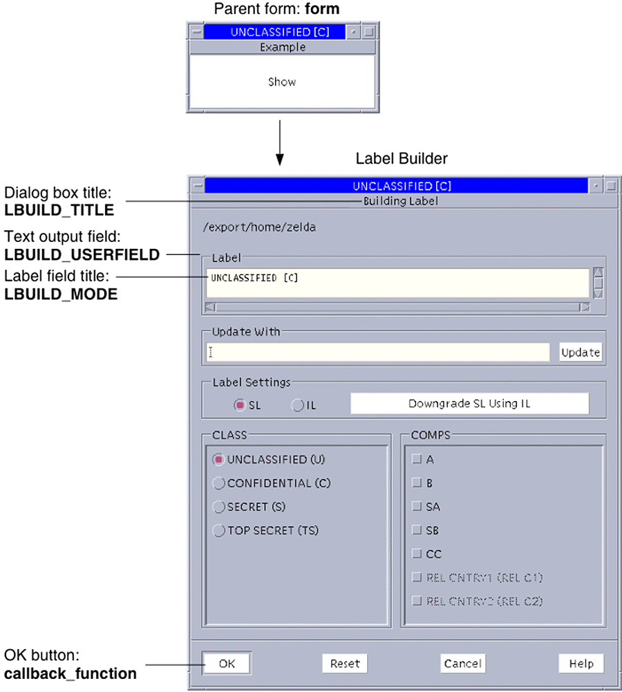

Solaris Trusted Extensions Developer's Guide
|
|||||||||||||||||||||||||||||||||||||||||||||||||||||||||||||||||||||||||||||||||||||
|
1. Solaris Trusted Extensions APIs and Security Policy 4. Printing and the Label APIs 5. Interprocess Communications 8. Trusted Web Guard Prototype 9. Experimental Java Bindings for the Solaris Trusted Extensions Label APIs |
Creating an Interactive User InterfaceThe following figure shows a GUI similar to the one created by the code that follows the figure. The main program creates a parent form (form) with one button (display). The button callback shows the Label Builder dialog box that is created by the call to the tsol_lbuild_create() routine. See the tsol_lbuild_create(3TSOL) man page. Figure 7-1 Label Building InterfaceThe Label Builder dialog box appears when you click the Show button in the parent form. The callouts indicate where the parameters passed to the tsol_lbuild_create() routine appear in the Label Builder dialog box. See the tsol_lbuild_create(3TSOL) man page. The following code creates a GUI something like that shown by the figure. #include <X11/Intrinsic.h>
#include <X11/StringDefs.h>
#include <Xm/Xm.h>
#include <Xm/PushB.h>
#include <Xm/Form.h>
#include <Dt/ModLabel.h>
ModLabelData *data;
/* Callback passed to tsol_lbuild_create() */
void callback_function()
{
char *title, *userval;
char *string = (char *)0;
char *string1 = (char *)0;
int mode, view;
Boolean show;
m_label_t *sl_label, *work_sl_label;
Position x, y;
/* Your application-specific implementation goes here */
printf("OK button called\n");
/* Query settings */
mode = (int)tsol_lbuild_get(data, LBUILD_MODE);
title = (String)tsol_lbuild_get(data, LBUILD_TITLE);
sl_label = (m_label_t*) tsol_lbuild_get(data, LBUILD_VALUE_SL);
work_sl_label = (m_label_t*) tsol_lbuild_get(data, LBUILD_WORK_SL);
view = (int)tsol_lbuild_get(data, LBUILD_VIEW);
x = (Position ) tsol_lbuild_get(data, LBUILD_X);
y = (Position ) tsol_lbuild_get(data, LBUILD_Y);
userval = (char *)tsol_lbuild_get(data, LBUILD_USERFIELD);
show = (Boolean )tsol_lbuild_get(data, LBUILD_SHOW);
label_to_str(sl_label, &string, M_LABEL, LONG_NAMES);
label_to_str(work_sl_label, &string1, M_LABEL, LONG_NAMES);
printf("Mode = %d, Title = %s, SL = %s, WorkSL = %s, View = %d, ",
mode, title, string, string1, view);
printf("X = %d, Y = %d, Userval = %s, Show = %d\n",
x, y, userval, show);
}
/* Callback to display dialog box upon button press */
void Show(Widget display, caddr_t client_data, caddr_t call_data)
{
tsol_lbuild_set(data, LBUILD_SHOW, TRUE, NULL);
}
main(int argc, char **argv)
{
Widget form, topLevel, display;
Arg args[9];
int i = 0, error, retval;
char *sl_string = "CNF";
m_label_t * sl_label;
topLevel = XtInitialize(argv[0], "XMcmds1", NULL, 0, &argc, argv);
form = XtCreateManagedWidget("form",
xmFormWidgetClass, topLevel, NULL, 0);
retval = str_to_label(sl_string, &sl_label, MAC_LABEL, L_NO_CORRECTION, NULL);
printf("Retval = %d\n", retval);
data = tsol_lbuild_create( form, callback_function,
LBUILD_MODE, LBUILD_MODE_SL,
LBUILD_TITLE, "Building Sensitivity Label",
LBUILD_VALUE_SL, sl_label,
LBUILD_VIEW, LBUILD_VIEW_EXTERNAL,
LBUILD_X, 200,
LBUILD_Y, 200,
LBUILD_USERFIELD, "/export/home/zelda",
LBUILD_SHOW, FALSE,
NULL);
i = 0;
XtSetArg(args[i], XmNtopAttachment, XmATTACH_FORM); i++;
XtSetArg(args[i], XmNleftAttachment, XmATTACH_FORM); i++;
XtSetArg(args[i], XmNrightAttachment, XmATTACH_FORM); i++;
XtSetArg(args[i], XmNbottomAttachment, XmATTACH_FORM); i++;
display = XtCreateManagedWidget("Show",
xmPushButtonWidgetClass, form, args, i);
XtAddCallback(display, XmNactivateCallback, Show,0);
XtRealizeWidget(topLevel);
XtMainLoop();
tsol_lbuild_destroy(data);
}When run, the program produces the following output: OK button called Mode = 12, Title = Building Sensitivity label, Label = CNF, WorkSL = SECRET, View = 1, X = 200, Y = 200, Userval = /export/home/zelda, Show = 1 The following sections cover these topics:
Label Builder BehaviorThe Label Builder dialog box prompts the end user for information and generates a valid sensitivity label from the input. Label Builder ensures that a valid label or clearance is built. The labels and clearances are defined in the label_encodings file for the system. Label Builder provides default behavior for the OK, Reset, Cancel, and Update buttons. The callback passed to the tsol_lbuild_create() routine is mapped to the OK button to provide application-specific behavior. Keyboard Entry and Update ButtonThe Update button takes the text the user types in the Update With field and checks that the string is a valid label or clearance as defined in the label_encodings file.
When the user clicks OK, the user-built value is handled according to the OK button callback implementation. Radio Button OptionsThe Label Settings radio button options enable you to build a sensitivity label or clearance from classifications and compartments. These options also enable you to build an information label from classifications, compartments, and markings. Depending on the mode, one of these buttons might be grayed out. This approach is independent of the keyboard entry and Update button method described in the previous section. The information about the classifications, compartments, and markings is specified in the label_encodings file for the system. The combinations and constraints that are specified in the label_encodings file are enforced by graying out invalid combinations. The Label field is updated and the value is stored in the appropriate working label field of the ModLabelData variable that is returned by the tsol_lbuild_create() routine when the user chooses options. The user can build a sensitivity label or a clearance by selecting radio buttons in the classification (CLASS) and compartment (COMPS) lists. When the user clicks OK, the user-built value is handled according to the OK button callback implementation. Reset ButtonThe Reset button sets the text in the Label field to what its value was when the application started. Cancel ButtonThe Cancel button exits the application without saving any changes. Application-Specific Functionality for Label BuilderThe Label Builder GUI generates a valid label or clearance. You must also add application-specific callbacks, error handling, and other functionality that is associated with that label or clearance. Privileged Operations and Label BuilderLabel Builder shows the user only those classifications and related compartments that are dominated by the workspace sensitivity label. If the executable has the sys_trans_label privilege in its effective set, more classifications and compartments might be shown. Your application-specific implementation for the OK button callback might require privileges. If the user does not have the authorization to upgrade or downgrade labels, the OK and Reset buttons are grayed out. The same is true if the user-built label is out of the user's range. The grayed-out buttons prevent the user from completing the task. No privileges can override these restrictions. tsol_lbuild_create() RoutineThe tsol_lbuild_create() routine accepts any widget, a callback function, and a null-terminated series of name and value pairs. The name represents an operation. The routine returns a variable of type ModLabelData. The following describes the information accepted by the tsol_lbuild_create() routine:
Extended Label Builder OperationsThis section describes the extended operations and valid values that you can pass to the tsol_lbuild_create(), tsol_lbuild_get(), and tsol_lbuild_set() routines. The values that are passed to tsol_lbuild_create() are stored in its return value. The return value is of type ModLabelData. The values returned in the parameters can be accessed by calls to tsol_lbuild_get() and tsol_lbuild_set(). The ModLabelData structure is described in ModLabelData Structure. See the tsol_lbuild_create(3TSOL), tsol_lbuild_get(3TSOL), and tsol_lbuild_set(3TSOL) man pages. All extended operations are valid to pass to tsol_lbuild_get(). However, the LBUILD_WORK_SL and LBUILD_WORK_CLR operations are not valid to pass to tsol_lbuild_set() or tsol_lbuild_create() because these values are set by Label Builder based on user input. These exceptions are noted in the following operation descriptions:
ModLabelData StructureThe ModLabelData structure contains information about the state of the Label Builder interface that is created by the call to the tsol_lbuild_create() routine. The following table describes the ModLabelData fields. All fields, except for the widgets and the callbacks, are accessible by specifying the associated extended operation and a valid value in a call to tsol_lbuild_set() or tsol_lbuild_get(). For descriptions of the extended operations, see Extended Label Builder Operations. Table 7-1 ModLabelData Structure
|
||||||||||||||||||||||||||||||||||||||||||||||||||||||||||||||||||||||||||||||||||||
|